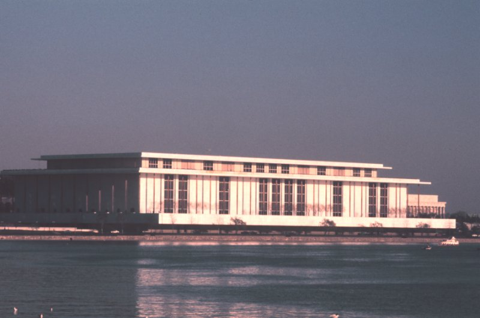

The Kennedy Center's board voted Sept. 16 to close the building for renovations, hours after a federal judge blocked an effort to add President Trump's name to the structure (NPR). The judge's ruling was described as scathing, a word judges do not reach for when they think a case is close (ABC News). Trump responded by threatening to block the renovation entirely unless his name goes back on the building (CBS News).
That threat is the whole story in miniature. A performing arts center named for a assassinated president, funded in part by taxpayers, now sits closed because the man who reshaped its board this year cannot get his name onto the marble. The board's own meeting was consumed almost entirely by the closure and the court fight, according to reporting on the session, leaving little room for anything resembling the center's actual mission of staging opera, ballet and theater (ABC News).
The closure is already producing casualties that have nothing to do with naming rights. Once the building goes dark for construction, local coverage in Washington raised a separate worry: that parts of the Kennedy Center could face demolition rather than renovation, a possibility that alarms preservationists who note the building's Edward Durell Stone architecture is itself a historical artifact (Fox 5 DC). That concern traveled from Washington to Atlanta without changing a word, run nearly identically in both markets, a sign of how thin local reporting capacity has gotten even on a story this visible (Fox 5 Atlanta).
The naming fight did not start with the court ruling. It started when Trump took over the Kennedy Center's board earlier this year and pushed to have his name attached to the building, a move one analysis called evidence of how much of his second term has been spent on questions of his own glorification rather than governance (Yahoo News). The renovation itself, the ostensible reason for the closure, is now hostage to that fight. Visitors and performers lose a working arts institution. The judge lost nothing but Trump's patience.
The renovation now depends less on architects than on lawyers, and the next two weeks decide who blinks first.
Trump's team will almost certainly appeal the ruling within days, not weeks. The judge's language left little room for a quiet settlement, and a White House that treats naming rights as a governance priority does not sit on a scathing loss (ABC News). Expect an emergency motion or a notice of appeal filed before the end of September, with Trump continuing to hold the renovation itself hostage in public statements until the naming question is resolved in his favor (CBS News). The board he reshaped earlier this year is positioned to lose the most in this scenario. Members who voted for closure now have to explain to donors and performers why a functioning arts institution sits dark over a dispute that has nothing to do with acoustics or plumbing.
That appeal timeline is what makes the demolition question urgent rather than theoretical. Once a building closes for construction, the gap between "renovation" and "demolition" is not architectural, it is legal exposure, and lawyers on both sides know that an empty building is easier to justify tearing into than an operating one. The most likely outcome over the next two weeks is that preservation advocates in Washington escalate from raising concerns to filing something, whether that is a formal request for landmark review or an intervention in the existing litigation, because the Edward Durell Stone structure has no protection against a board that already answers to Trump (Fox 5 DC). If that filing comes, it will almost certainly name the board directly rather than the White House, since the board holds the legal authority over the building and its renovation contracts.
The deeper mechanism here is timing as leverage. Trump does not need to win the appeal to get what he wants. He only needs the building to stay closed long enough that reopening with his name attached becomes the path of least resistance for a board he already controls. The most likely near-term losers are the performers and staff who depend on the Kennedy Center's operating calendar, since every week of closure without resolution pushes canceled seasons further into 2027, and no filing schedule in this fight currently protects them.
The board Trump reshaped now has to decide whether it works for him or for the institution, and that choice opens rooms nobody on either side has priced in yet.
A board member could break ranks and sue their own board. The Kennedy Center's trustees are not a monolith just because Trump remade the roster. Some were appointed for arts credentials, not political loyalty, and a closure that cancels seasons and alienates donors gives at least one of them a reason to peel off. The combination that just became newly available is this: a sitting trustee, sympathetic to preservationists already circling the Edward Durell Stone building, could file or support a legal challenge against the very board they sit on, arguing the closure vote itself was driven by the naming dispute rather than any genuine renovation need. That argument didn't exist as a legal theory until the judge's ruling made the naming motive explicit and public. A defector trustee would not need to win. They would only need to put board deliberations into discovery, which is the one thing a board that answers to Trump cannot afford.
That kind of internal fracture is what makes the next door visible. If a trustee defects, the preservation fight and the naming fight merge into one case instead of two parallel tracks. Right now those are separate legal fronts moving at separate speeds. A defecting board member with standing and inside knowledge of the closure vote could hand preservationists exactly what they lack on their own: proof that "renovation" was the board's cover story for a fight over marble lettering. Merge those tracks and the demolition question stops being a local news worry and becomes Exhibit A in a case about board governance itself, which is a much harder thing for Trump's team to spin as a fight over "his" name.
There is a door here that opens somewhere better, and it runs through Congress rather than the courthouse. The Kennedy Center was created by federal statute as a living memorial, which means lawmakers who have stayed quiet through the naming fight have standing they haven't used. A single member of Congress, from either party, could introduce legislation clarifying that the center's federal charter bars name changes tied to sitting presidents, converting a court fight that depends on one judge's patience into a durable statutory rule. That bill wouldn't have been reachable last month, before a federal judge put the word "scathing" on the record and before Fox affiliates in two cities ran matching demolition warnings that made preservation a bipartisan-flavored local story instead of a partisan one. A member looking for a low-risk, high-visibility fight against executive overreach just got handed one that doesn't require attacking Trump directly at all. It only requires defending a dead president's name.
The people defending the closure aren't defending the closure. They're defending a story about who owns the building's memory.
Trump says the renovation delay is the judge's fault, not his. In his public statements threatening to block the renovation, Trump has framed the standoff as the court obstructing progress on a building that badly needs work, rather than what the ruling itself describes: a judge stopping him from attaching his name to a structure Congress designated as a memorial to a different president (CBS News). The claim works because it flips the sequence. The renovation was never blocked by the court. The court blocked the name. Trump is the one holding the renovation hostage, by his own stated terms, until the naming question resolves in his favor. Believing his version costs a reader almost nothing in the moment. It requires accepting a simpler story, that a judge is playing politics with a building's future, instead of a more uncomfortable one, that a sitting president is willing to leave a national arts institution dark rather than lose a fight over lettering.
The people who benefit from that flipped sequence are not hard to find. A board Trump reshaped this year gets political cover for a closure vote that a judge's own language ties directly to the naming fight, not to plumbing or acoustics (ABC News). If the public believes the delay is judicial obstruction, the board never has to answer for a vote made almost entirely about a lawsuit, according to the reporting on that meeting, rather than about the building's actual condition. Trump gets something too. Every day the closure drags on, framed as the court's fault, is a day his name stays the more sympathetic answer to "why is this closed," instead of the cause of it.
scathing
the word the judge's ruling earned, and the word Trump's version of events has no room forThe historical parallel is not subtle. Presidents have tried to attach their names to public works before, but rarely has one argued that a court's refusal to grant a naming request is itself an act of obstruction against the public. That inversion, harm reframed as the fault of whoever stopped it, is the tell. It is not a disagreement about renovation timelines. It is a claim built to survive contact with a ruling that already said otherwise.
![NTK]()